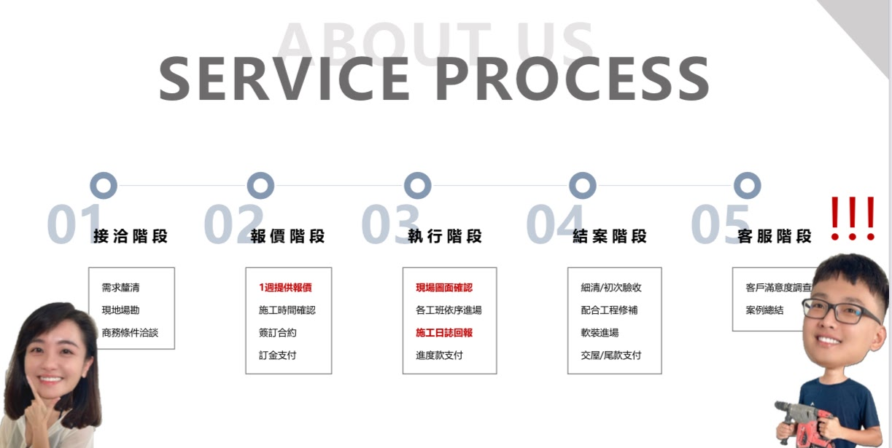
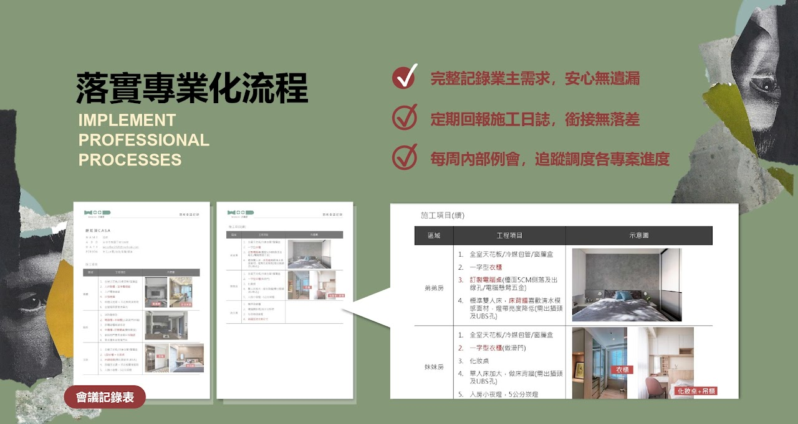
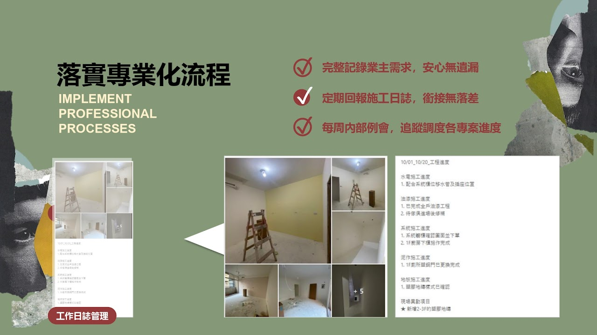
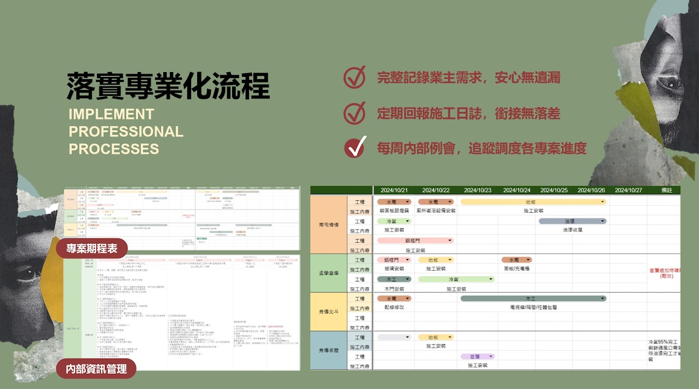

落實專業化流程：完整記錄業主需求，安心無遺漏；定期回報施工日誌，銜接無落差；每周內部例會，追蹤調度各專案進度。


從施工項目、區域到工程細節，每一次討論都留下完整紀錄，確保業主的每個需求都被看見、被落實。

水電、油漆、系統櫃、泥作、地板進度逐日更新，現場異動項目即時同步，讓每個環節無縫銜接。

以甘特圖掌握多案場的工種排程，配合每周例會即時調度人力與物料，讓專案準時、準確地推進。
透過標準化的甘特圖排程與會議記錄，確保多專案同時進行時，資訊仍然清楚透明、可追蹤。